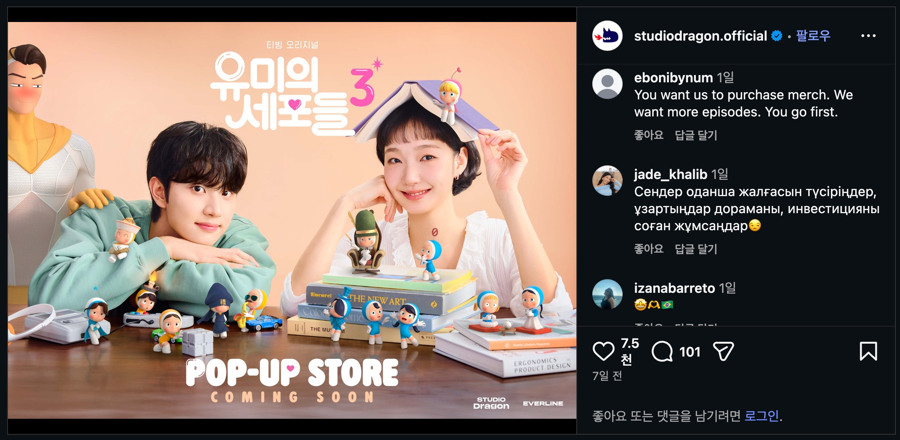
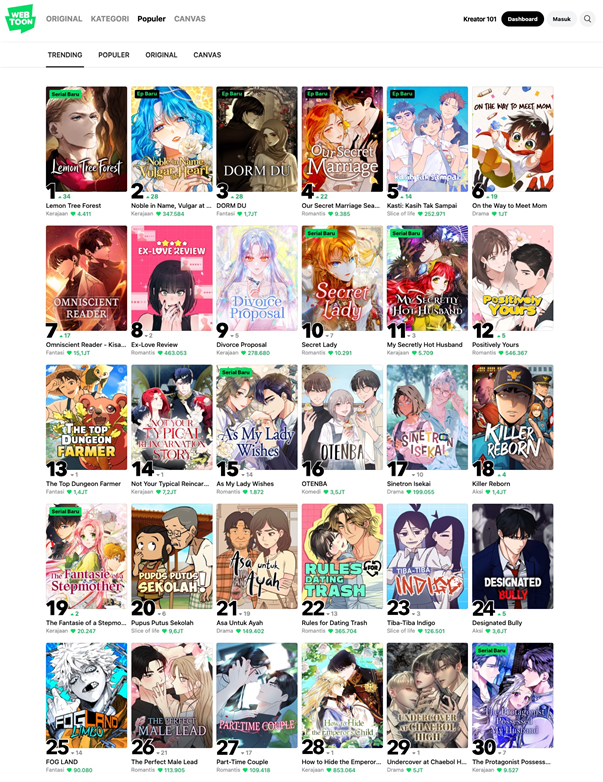

<유미의 세포들>은 공개 직후 라쿠텐 비키 미국, 유럽, 중동, 오세아니아에서 공개 1주차부터 주간순위 1위를 차지2)했고, 몽골 Inche TV에서도 1위, 일본 디즈니+에서 3위를 차지하는 등 초반부터 단단한 흥행을 예고했다. 국내에서도 2주 연속 주간 유료가입 기여자 수 1위를 기록해 시즌1, 시즌2에 이어 시즌3까지 티빙의 흥행 효자 작품으로 자리 잡았다. 시즌2로부터 4년이 지난 시점에 새롭게 시작하는 시즌제 드라마인데도 불구하고 시청자들을 사로잡는데 성공한 셈이다.
초반 일부 국가들의 흥행몰이에 더해 <유미의 세포들> 시즌3은 종영이 다가오는 4월 30일을 기준으로 라쿠텐 비키에서 81개국 랭킹 1위, 인도 랭킹 3위 등 회차가 갈수록 엄청난 흥행3)을 이어가고 있다. 비단 몇 개국에서 산발적으로 흥행한 것이 아니라, 전 세계 9,500만 명이 사용4)하는 플랫폼에서 1위를 차지하고 있다는 점은 특기할 만하다.
이런 흥행은 <유미의 세포들> 중에서도 시즌3이 가지는 독특한 지점에 기인한다. 전통적 한국 드라마의 로맨스 서사는 ‘판타지’에 집중되어 있었다. <파리의 연인>(2004)에서 <시크릿 가든>(2010)에 이르기까지 2000년대 한국 드라마는 할리퀸 로맨스(캐나다의 로맨스 전문 출판사인 할리퀸Harlequin에서 출간한 로맨스 시리즈)의 영향을 크게 받았다. 할리퀸 로맨스는 부유하지만 마음이 공허한(하지만 체지방은 매우 적어야 한다) 남자 주인공이 가난하지만 심지가 굳고 매우 아름답지만(그걸 본인만 모르고!) 생업에 지쳐있는 여자 주인공의 로맨스를 그리는 경우가 많다. 흔히 말하는 ‘신데렐라 스토리’가 할리퀸 로맨스에서 가장 자주 등장하는 코드라고 할 수 있다. 2000년대 작품들을 예시로 들었다는 걸 보면 알 수 있겠지만, 이제는 한물간 코드다. 흔히 ‘로맨스는 유치하다’고 이야기하는 시기가 바로 이때다.
하지만 <유미의 세포들>은 다르다. 작품 속에선 주인공 김유미가 연애와 커리어 사이에서 고민하며 상처받고 다시 일어서는 성장기를 다룬다. 로맨스가 중심이 아니라 20대에서 30대로 넘어가는 김유미의 삶과 커리어에 대한 고민이 핵심이다. 그리고 바로 이 지점이 다른 드라마와 유미의 세포들이 차별화되는 부분이다. 그 중에서도 시즌3은 시즌1, 2를 통해 미숙함을 깨닫고, 상처받은 다음의 이야기. 그러니까, 성장이 끝난 후의 이야기다. 보통 ‘성장이 끝난’ 상태라면 달관과 평온을 상상하지만 현실은 다르다. 바로 그 지점을 <유미의 세포들>은 파고들었다.
<유미의 세포들> 시즌2에서 웹소설 작가로 데뷔를 준비하던 유미는 이제 스타 작가가 되어있다. 스타 작가로서 자신감 넘치는, 자신이 이뤄놓은 것이 곧 나를 증명하는 프로페셔널로서의 김유미와 연애 앞에서 흔들리는 김유미가 공존한다. 남들이 ‘그래야 한다’고 이야기하는 커리어를 거부하고 스스로 길을 찾아나서 성공한, 그럼에도 사랑 앞에서 불안한 유미는 한 세대를 대변한다.
1990년대 중반~2000년대 중반 태생은 이제 커리어를 시작했거나 한창 커리어를 키워가는 중이다. 특히 이 중에서 여성들은 대부분의 국가에서 부모세대보다 훨씬 높은 교육수준과 경제력을 갖춘 세대로 자라났고, 이제 대중문화의 핵심 소비층이 되었다. 내 나름의 커리어를 쌓고, 그것으로 생계를 유지하고 있는, 또는 그런 삶을 꿈꾸는 여성들에게 이전과 같은 할리퀸 스타일의 로맨스는 큰 매력이 없다. 아름답고 가련한 나를 구해줄 ‘백마탄 왕자님’이 ‘마이바흐 탄 본부장님’으로 바뀐 로맨스는 현재 젊은 세대에겐 더 이상 매력적이지 않다. 그렇다고 내가 스스로 모든 것을 이뤄내는 성장 스토리도 아니고, 그저 나의 커리어와 함께 갈 수 있는 동반자로서의 연인을 원할 뿐이다. <유미의 세포들> 시즌3은 정확하게 이 지점을 포착해냈다. 이 과정에서 설레고, 아프고, 또 커리어를 이어가는 ‘생활인’으로서의 주인공은 이제 글로벌 코드가 됐다.
<유미의 세포들>의 글로벌 흥행을 가능하게 한 이유를 또 하나 짚자면 매체의 변화다. 드라마는 기본적으로 TV를 통해 보는 매체였고, TV는 개인이 아닌 가족이 함께 보는 디바이스다. 코로나19를 기점으로 폭발적으로 증가한 OTT 시청은 영상매체를 TV가 아니라 스마트폰으로 보는 것으로 바꿔놓았다. 드라마가 ‘함께 보는’ 매체에서 ‘개인화된’ 매체로 이동하고 있다는 점이 특기할만하다.
특히 81개국 순위를 집계해 발표한 라쿠텐 비키를 주목할 필요가 있는데, 라쿠텐 비키는 원래 한국 드라마를 전문으로 서비스하던 플랫폼이다. 한국계 부부가 운영하던 글로벌 비디오 스트리밍 플랫폼 ‘비키(Viki)’를 2013년에 일본의 라쿠텐 그룹이 인수한 이후5) 지금까지 9,500만 명에 달하는 구독자를 보유6)하고 있다. 라쿠텐 비키에서 여전히 가장 큰, 가장 인기 있는 카테고리는 한국 드라마다. 라쿠텐 비키라는 플랫폼은 한국 드라마에 특화된 서비스라고 볼 수 있다.
한국인들은 잘 모르는 서비스지만, 한국 드라마에 특화된 서비스가 존재한다. 그리고 그것이 일본계 자본으로 운용된다는 점도 흥미롭지만, 이 서비스를 이용하는 주요 시청자들이 ‘한국 드라마’를 타깃으로 들어온 개인들이라는 점은 더욱 흥미롭다. TV를 통해 가족이 함께 보는 매체였던 드라마가 개인화된 매체로 이동한 시기, 코로나19 이후 본격적으로 시대상이 변화한 지금 우리는 글로벌 시대, 초개인화 시대의 대중문화가 어떻게 이동하는지를 목도하고 있다.
여기에 티빙이 HBO Max 아시아 태평양 17개국, 일본 디즈니+ 티빙 브랜드관을 통해 18개국에 동시 공개하는 전략 역시 주효했다.7) 넷플릭스에 맡겨서 IP를 독점하는 구조가 아니라, 티빙은 국내와 글로벌을 잇는 전략을 짰다. 그러면서 동시에 한국에서 마케팅을 통해 ‘<유미의 세포들>이 돌아왔다’고 알렸다.
이 마케팅에는 각종 광고뿐 아니라 5월 12일부터 24일까지 진행되는 현대아울렛 동대문점 팝업, 디자인스킨과 콜라보 굿즈 등 다양한 시도가 함께한다. 가장 눈길이 가는 건 드라마 팝업이다. 드라마가 종영하고 곧바로 팝업을 여는 시점에서 드라마의 여운을 느끼고 있을 팬들을 최대한 끌어모으겠다는 전략이 엿보인다. 이에 응답하듯 팝업 소식을 알리는 스튜디오 드래곤 공식 인스타그램에는 전 세계 팬들이 달려와 ‘에피소드를 더 내놓으면 굿즈를 사겠다’고 엄포(?)를 놓고 있다.

[그림 1] 유미의 세포들 시즌3 팝업스토어 홍보 이미지
(출처: 스튜디오 드래곤 공식 인스타그램 캡처)
티빙은 드라마 자체에 중심에 두고 OTT를 통해 글로벌 확장을 꾀하고, 콘텐츠를 유통하는데서 오는 강점을 최대한 살리고 있다. 동시에 제작사는 글로벌 인지도를 얻은 IP를 확장시켜 추가 수익화를 꾀하고 있는 중이다. 물론 아직까지는 상대적으로 거대한 유통망을 가진 일본의 미디어믹스와 비교할 바는 아니지만, 일단 지금까지는 성공적인 시도로 보인다. 시청자들은 OTT 서비스에서 <유미의 세포들> 시즌3을 감상하고, 감상 경험을 소셜미디어에서 나눈다. 그리고 제작사는 확장 프로모션을 소셜미디어를 통해 공개하고, 콜라보 상품을 배우들과 함께 공개한다. 이 모든 확장은 개인화된 디바이스, 스마트폰을 통해 일어났다.
웹툰 원작 <유미의 세포들>의 시즌화 성공은 우리나라 IP의 진화를 엿볼 수 있는 단면이지만, 여기서 한 가지 짚어야 할 지점이 있다. 드라마가 한창 방영 중인 동안, <유미의 세포들> 드라마는 웹툰 플랫폼에서는 이렇다 할 반향으로 이어지지는 않고 있다는 점이다. 이러한 현상은 이건 <유미의 세포들>이 서비스되는 언어권별 홈페이지 내 ‘트렌딩’ 리스트8)에서 공통적으로 나타나고 있다.

[그림 2] 네이버웹툰 인도네시아 서비스 ‘트렌딩’ 페이지
(출처: 네이버웹툰 인도네시아 홈페이지 2026년 5월 6일 캡처)
물론 드라마 자체로만 보더라도 성공적이다. 앞서 이야기한 글로벌 흥행뿐 아니라 국내 독점 서비스를 맡은 OTT인 티빙은 꽤 재미를 보고 있다. 비단 시즌3만이 아니다. <유미의 세포들> 시즌1, 시즌2 모두 시즌3 공개 2주 전부터 티빙 주간 콘텐츠 드라마 부문 10위권 내에 다시 진입했고, 시청 순 이용자(UV)역시 시즌3 공개 3주 전 대비 2.6배, 3.1배 늘어9) <유미의 세포들> 시즌3을 보기 위해 정주행하는 비율이 적지 않음을 확인할 수 있었다.
탄탄한 원작을 기반으로 흥행가도에 오른 작품이지만, 정작 원작은 크게 주목받지 못하고 있는 셈이다. 이 과정에서 우리는 원작에서 확장된 IP인 드라마는 생명력이 연장될 수 있음을 확인했다. 무려 4년 만에 돌아온 드라마가 글로벌 차트 흥행을 이끌었고, 이로 인해 시즌1과 2가 동시에 주목받는 현상도 확인했으니 말이다.
앞서 잠깐 언급한 일본의 미디어믹스는 만화를 놓고 보면 잡지 연재-단행본 발행-애니메이션 제작-흥행 시 MD 상품과 컬래버레이션을 공격적으로 진행하는 방식을 택한다. 이 과정에서 단행본 판매가 폭발적으로 늘어나고, 출판사와 작가는 여기서 수익을 얻는다. 그리고 애니메이션은 시즌제로 진행되므로, 만화가 연재되는 기간은 물론 완결되고도 작가는 완결작에서 수익을 기대할 수 있다. 물론 이런 미디어믹스 시스템에도 단점은 있다. 웹툰의 IP 확장은 작가의 저작권료를 일부 보장하는 방식으로 이뤄지지만, 일본의 경우 애니메이션에 투자한 기업들의 모임인 제작위원회가 애니메이션 판권을 모두 가지고 있어 작가의 수익이 보장되지 않는 경우가 많다.
애니메이션은 인기작의 경우 시즌제로 수년에 걸쳐 만들어지는 경우가 많고, IP의 수명을 늘리는데 지대한 공헌을 하고 있다는 점에 주목해보자. 작가의 저작권을 지키면서, 동시에 IP 자체의 수명을 늘리는 IP 확장은 가능할까? 일단 <유미의 세포들> 시즌3은 적어도 드라마 IP에서 이것이 가능했음을 증명했고, 스튜디오 드래곤과 스튜디오N은 드라마를 바탕으로 한 IP (재)확장을 통해 추가적인 수익화를 꾀하고 있다. 그렇다면 이제 다음 과제는 ‘원작 IP의 생명력을 연장시키는’ 실사화 기반 IP 확장이 될 것이다. 창작물에 기여하는 모두가 윈윈하는 시스템이 가능할지, 우리에겐 관전 포인트가 늘었다.
<유미의 세포들> 시즌3의 흥행은 우연이 아니다. 원작 IP를 지렛대 삼아 티빙, 스튜디오 드래곤, 스튜디오N이 촘촘히 짠 전략이 맞물려 일궈낸 쾌거다. 이들은 인구 구성과 시대적 흐름을 바탕으로 한 스마트한 시장분석과 OTT 확장 전략으로 글로벌 인지도를 가진 IP를 만들어 냈다. 대중은 이런 시도에 열광했고, 효과는 팬덤으로 나타나고 있다. 제작사 역시 인기 IP가 가장 뜨거울 때 추가적인 수익화가 얼마나 가능할지 지표를 얻고 있는 중이다. <유미의 세포들> 시즌3은 글로벌 IP를 만들고자 한다면 앞으로 OTT와 영상화 전략에 있어서 무엇이 중요한지를 보여주는 가장 중요한 2026년의 이정표다. 원작을 골라내는 안목과 분석 아래 실행할 추진력, 그리고 그걸 바탕으로 추진되는 오프라인 이벤트에서 얻어낼 ‘다음’을 위한 포석까지. 물론 그들이 이것을 모두 계획하진 않았을 것이다. 그럼에도 불구하고 만들어 낸 성과이기에 더욱 값지다. 어려운 시장 상황 속에서도 ‘포스트 유미’를 만들어 낼 희망을 만들기 위해 노력한 모두에게 찬사를 보낸다.